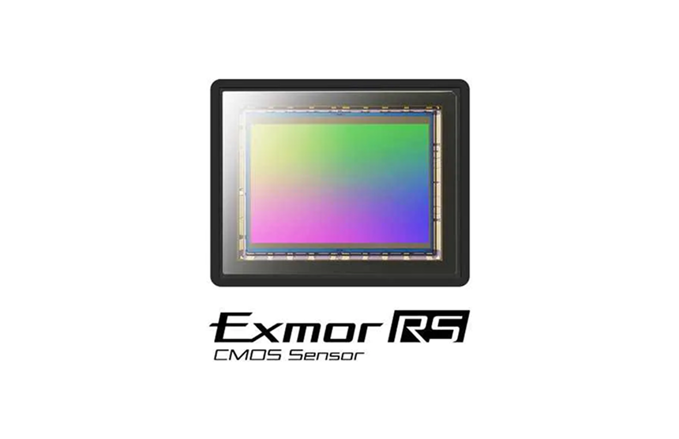
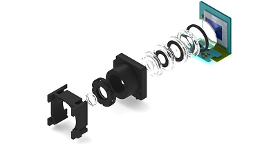
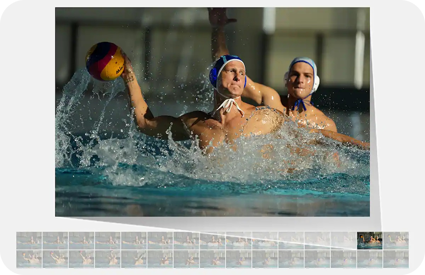
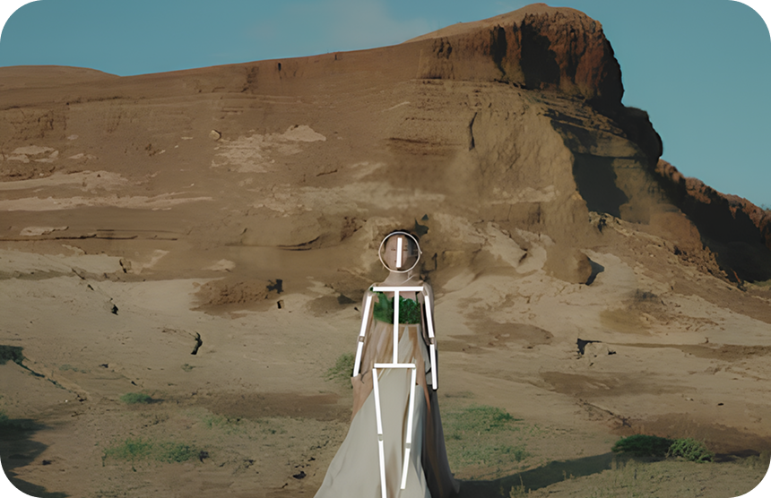
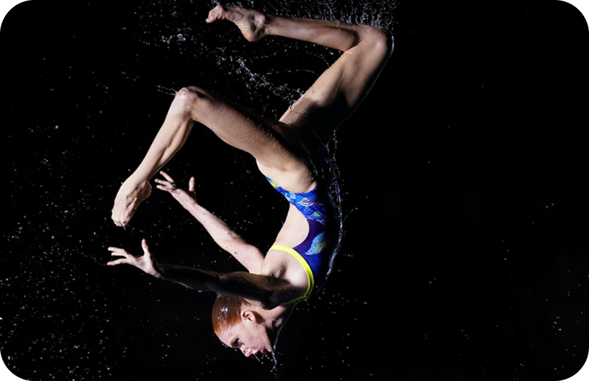

엑스모어
연속 촬영 속도
AI 기반 피사체 인식 AF
손떨림 보정
OLED 뷰파인더
기존 센서보다 더 많은 빛을 받아들이는 역조명 구조를 채택하고 고속 데이터 처리로 빠른 연속 촬영과 4K 영상 촬영에 최적화됨.
고속 이미지 프로세싱을 통해 초당 수십 장의 고속 연속 촬영.
움직임이 빠른 스포츠나 야생 촬영에 적합함.
AI 알고리즘으로 사람, 동물, 차량 등의 피사체를 정확하게 인식.
눈동자 추적(AF)도 가능하여빠르게 초점을 맞춰줌.
야간 촬영이나 망원 렌즈 사용 시에도 흔들림 없이 선명하게.
영상 촬영 시에도 자연스러운 흔들림 보정 효과 제공.
고해상도 OLED EVF로 선명하고 자연스러운 뷰를 제공함.
실시간으로 색상과 노출을 정확히 확인 가능함.